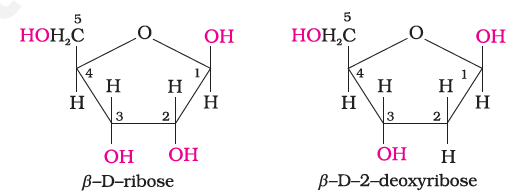
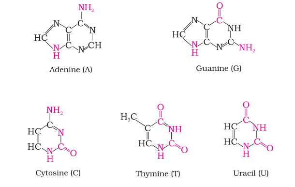
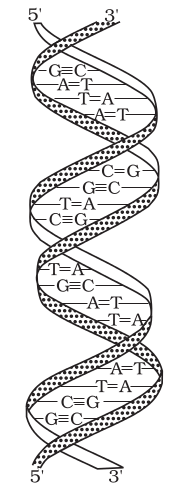

14.5: Nucleic Acids
Every generation of each and every species resembles its ancestors in many ways. How are these characteristics transmitted from one generation to the next? It has been observed that nucleus of a living cell is responsible for this transmission of inherent characters, also called heredity. The particles in nucleus of the cell, responsible for heredity, are called chromosomes which are made up of proteins and another type of biomolecules called nucleic acids. These are mainly of two types, the deoxyribonucleic acid (DNA) and ribonucleic acid (RNA). Since nucleic acids are long chain polymers of nucleotides, so they are also called polynucleotides.
James Dewey Watson
 Born in Chicago, Illinois, in 1928, Dr Watson received his Ph.D. (1950) from Indiana University in Zoology. He is best known for his discovery of the structure of DNA for which he shared with Francis Crick and Maurice Wilkins the 1962 Nobel prize in Physiology and Medicine. They proposed that DNA molecule takes the shape of a double helix, an elegantly simple structure that resembles a gently twisted ladder. The rails of the ladder are made of alternating units of phosphate and the sugar deoxyribose; the rungs are each composed of a pair of purine/ pyrimidine bases. This research laid the foundation for the emerging field of molecular biology. The complementary pairing of nucleotide bases explains how identical copies of parental DNA pass on to two daughter cells. This research launched a revolution in biology that led to modern recombinant DNA techniques.
Born in Chicago, Illinois, in 1928, Dr Watson received his Ph.D. (1950) from Indiana University in Zoology. He is best known for his discovery of the structure of DNA for which he shared with Francis Crick and Maurice Wilkins the 1962 Nobel prize in Physiology and Medicine. They proposed that DNA molecule takes the shape of a double helix, an elegantly simple structure that resembles a gently twisted ladder. The rails of the ladder are made of alternating units of phosphate and the sugar deoxyribose; the rungs are each composed of a pair of purine/ pyrimidine bases. This research laid the foundation for the emerging field of molecular biology. The complementary pairing of nucleotide bases explains how identical copies of parental DNA pass on to two daughter cells. This research launched a revolution in biology that led to modern recombinant DNA techniques.
14.5.1 Chemical Composition of Nucleic Acids
Complete hydrolysis of DNA (or RNA) yields a pentose sugar, phosphoric acid and nitrogen containing heterocyclic compounds (called bases). In DNA molecules, the sugar moiety is β-D-2-deoxyribose whereas in RNA molecule, it is β-D-ribose.

DNA contains four bases viz. adenine (A), guanine (G), cytosine (C) and thymine (T). RNA also contains four bases, the first three bases are same as in DNA but the fourth one is uracil (U).

14.5.2 Structure of Nucleic Acids
A unit formed by the attachment of a base to 1′ position of sugar is known as nucleoside. In nucleosides, the sugar carbons are numbered as 1′, 2′, 3′, etc. in order to distinguish these from the bases (Fig. 14.5a). When nucleoside is linked to phosphoric acid at 5′-position of sugar moiety, we get a nucleotide (Fig. 14.5). 14.5.2 Structure

Fig. 14.5: Structure of (a) a nucleoside and (b) a nucleotide
Nucleotides are joined together by phosphodiester linkage between 5′ and 3′ carbon atoms of the pentose sugar. The formation of a typical dinucleotide is shown in Fig. 14.6.

Fig. 14.6: Formation of a dinucleotide
A simplified version of nucleic acid chain is as shown below.


Fig. 14.7: Double strand helix structure for DNA
Information regarding the sequence of nucleotides in the chain of a nucleic acid is called its primary structure. Nucleic acids have a secondary structure also. James Watson and Francis Crick gave a double strand helix structure for DNA (Fig. 14.7). Two nucleic acid chains are wound about each other and held together by hydrogen bonds between pairs of bases. The two strands are complementary to each other because the hydrogen bonds are formed between specific pairs of bases. Adenine forms hydrogen bonds with thymine whereas cytosine forms hydrogen bonds with guanine.
In secondary structure of RNA, helices are present which are only single stranded. Sometimes they fold back on themselves to form a double helix structure. RNA molecules are of three types and they perform different functions. They are named as messenger RNA (m-RNA), ribosomal RNA (r-RNA) and transfer RNA (t-RNA).
Har Gobind Khorana
 Har Gobind Khorana, was born in 1922. He obtained his M.Sc. degree from Punjab University in Lahore. He worked with Professor
Har Gobind Khorana, was born in 1922. He obtained his M.Sc. degree from Punjab University in Lahore. He worked with Professor
Vladimir Prelog, who moulded Khorana's thought and philosophy towards science, work and effort. After a brief stay in India in 1949, Khorana went back to England and worked with Professor G.W. Kenner and Professor A.R.Todd. It was at Cambridge, U.K. that he got interested in both proteins and nucleic acids. Dr Khorana shared the Nobel Prize for Medicine and Physiology in 1968 with Marshall Nirenberg and Robert Holley for cracking the genetic code.
DNA Fingerprinting
It is known that every individual has unique fingerprints. These occur at the tips of the fingers and have been used for identification for a long time but these can be altered by surgery. A sequence of bases on DNA is also unique for a person and information regarding this is called DNA fingerprinting. It is same for every cell and cannot be altered by any known treatment. DNA fingerprinting is now used
(i) in forensic laboratories for identification of criminals.
(ii) to determine paternity of an individual.
(iii) to identify the dead bodies in any accident by comparing the DNA's of parents or children. (iv) to identify racial groups to rewrite biological evolution.
14.5.3 Biological Functions of Nucleic Acids
DNA is the chemical basis of heredity and may be regarded as the reserve of genetic information. DNA is exclusively responsible for maintaining the identity of different species of organisms over millions of years. A DNA molecule is capable of self duplication during cell division and identical DNA strands are transferred to daughter cells. Another important function of nucleic acids is the protein synthesis in the cell. Actually, the proteins are synthesised by various RNA molecules in the cell but the message for the synthesis of a particular protein is present in DNA.